Privacy isn't a setting. It's the architecture.隐私不是一个开关，而是架构本身。
Most "private" messengers still route everything through their own machines. toxee can't read your messages, because toxee isn't in the middle of them.大多数“私密”通讯软件仍把一切经由自家服务器转发。toxee 读不到你的消息，因为 toxee 根本不在你们之间。
Pure peer-to-peer纯粹的点对点
Peers find each other through a distributed hash table and connect directly whenever the network allows. No accounts on anyone's server, no cloud inbox, no company between you and your friends.节点通过分布式哈希表互相发现，网络条件允许时直接连接。没有注册在别人服务器上的账号，没有云端收件箱，你和朋友之间没有任何公司。
Encrypted end to end端到端加密
Every message, file and call is encrypted with toxcore's NaCl cryptography. Only your friend's key can open it, by design rather than by policy.每条消息、每个文件、每次通话都由 toxcore 的 NaCl 加密。只有对方的密钥能解开——这是设计使然，而非政策承诺。
Identity without sign-up无需注册的身份
Your Tox ID (your public key plus a short anti-spam code) is what you share, as text or a QR code. There is no phone number or email to leak, and you can take your identity to any of your devices.你的 Tox ID（公钥加一段防骚扰码）就是你分享给别人的全部，可以用文本或二维码。没有可泄露的手机号或邮箱，身份可以随你带到任何设备。
Everything you expect from a chat app, minus the server.聊天应用该有的都有，唯独没有服务器。
toxee pairs the Tox protocol with a polished, modern interface built in Flutter. Here's what's inside.toxee 把 Tox 协议与基于 Flutter 的精致现代界面结合在一起。下面逐一介绍。
Full-featured chat, delivered device to device.功能完整的聊天，设备直达设备。
One-to-one chats feel like any modern messenger: emoji, stickers, delivery receipts, unread badges and search. The difference is that nothing is stored on anyone else's computer.一对一聊天和你熟悉的现代通讯软件一样顺手：表情、贴纸、送达回执、未读角标和搜索。不同的是，没有任何内容存放在别人的电脑上。
- Photos & files: send by picker or drag-and-drop. Images and small files download automatically, and you choose the size limit.图片与文件：通过选择器或拖拽发送。图片与小文件自动下载，大小阈值由你设定。
- Offline queue: messages to an offline friend are queued on your device and sent as soon as you're both online.离线队列：发给离线好友的消息先排队存在本机，双方同时在线时立即送出。
- Search everything: find contacts, groups and words inside your chat history from one search box.全局搜索：一个搜索框同时查找联系人、群组和聊天记录中的内容。
- Notes to self: a private conversation with yourself, saved only on this device.给自己发消息：一个只属于你的会话，仅保存在本机。
- Pin, mute & tidy: pin important chats, mute noisy ones, clear history per conversation.置顶、免打扰与清理：置顶重要会话、静音嘈杂的会话，可逐个清空聊天记录。
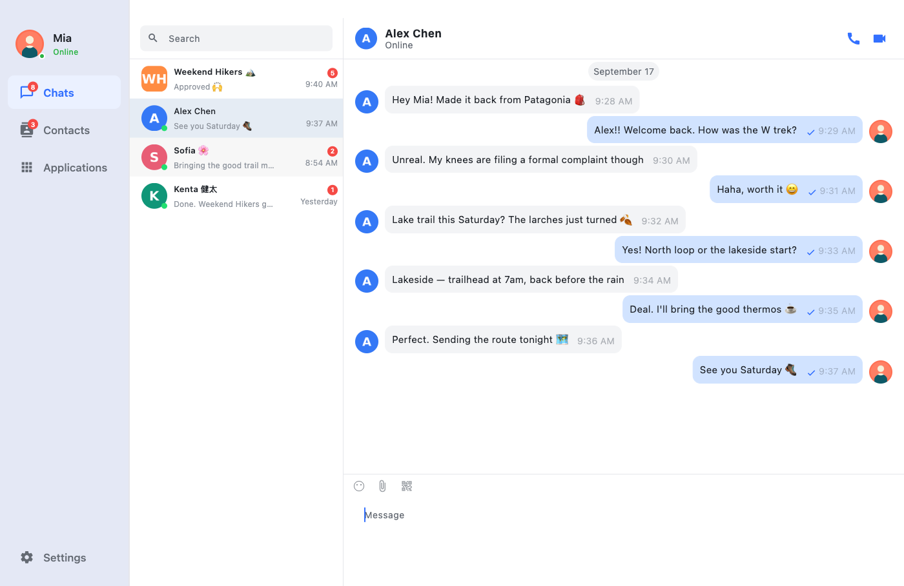
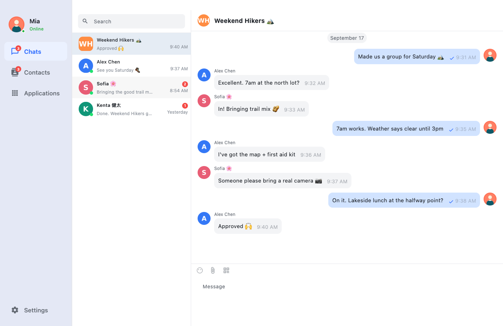
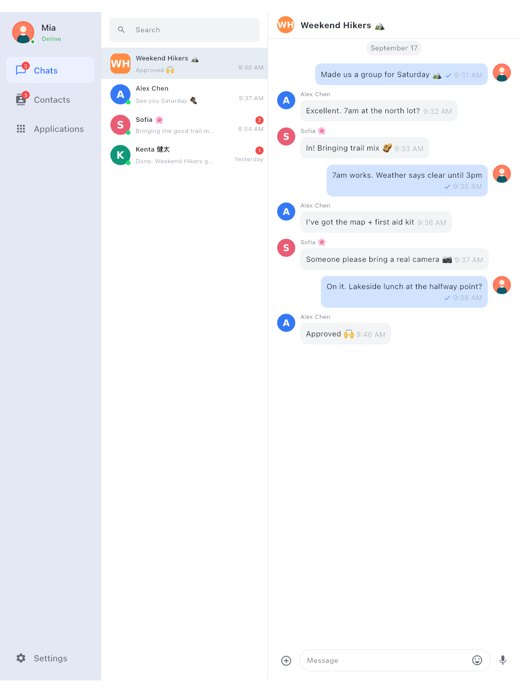
Group chats with no group server.没有群服务器的群聊。
Groups are hosted by their members over Tox's group protocol. Create one, invite friends, or join with a group ID. When toxee restarts, it rejoins your groups automatically.群组由成员通过 Tox 群协议共同承载。你可以创建群、邀请好友，或凭群 ID 加入；toxee 重启后会自动重新加入你的群。
- Modern groups: topics, member nicknames, roles and member management.新版群组：群公告、群昵称、成员角色与成员管理。
- Legacy conferences: create or join the older conference type to talk with Tox clients that only support it.旧版会议群：可创建或加入旧式 conference，与只支持它的 Tox 客户端互通。
- Invite your way: invite friends directly, share a group ID, or let toxee auto-accept invitations.灵活邀请：直接邀请好友、分享群 ID，或让 toxee 自动接受群邀请。
- Topics & your own labels: set a group topic everyone sees, and give groups your own name and avatar in your list.群公告与个人备注：设置所有成员可见的群公告，也可在自己的列表里为群改名、换头像。
One-to-one calls that go straight to the other person.直达对方的一对一语音与视频通话。
Audio and video calls run over ToxAV, the encrypted media layer built into toxcore. One-to-one calls work with other Tox clients such as qTox, and every call leaves a record in the chat.语音和视频通话基于 toxcore 内置的加密媒体层 ToxAV，一对一通话能与 qTox 等其他 Tox 客户端互通，每次通话都会在聊天中留下记录。
- Audio & video calls: send camera video from macOS, Android and iOS (Windows and Linux receive video); mute, turn video on or off, switch cameras on phones.语音与视频：macOS、Android、iOS 可发送摄像头画面（Windows 与 Linux 可接收视频）；支持静音、开关画面，手机上可切换摄像头。
- Phone-grade audio on mobile: earpiece or speaker, the screen turns off when the phone is at your ear, and calls survive interruptions such as alarms or Siri.手机级通话体验：听筒或扬声器切换，贴耳自动熄屏，闹钟、Siri 等打断后可恢复。
- Live call quality: a connection indicator shows how the link is holding up.实时通话质量：连接质量指示随时显示链路状况。
- Keep chatting: minimize the call to a floating window and come back to it anytime.边聊边通话：通话可最小化为悬浮窗，随时返回。
- Group calls are not supported yet: group chats work, but audio and video calls are currently one-to-one.暂不支持群组通话：群聊可以使用，但音视频通话目前仅支持一对一。
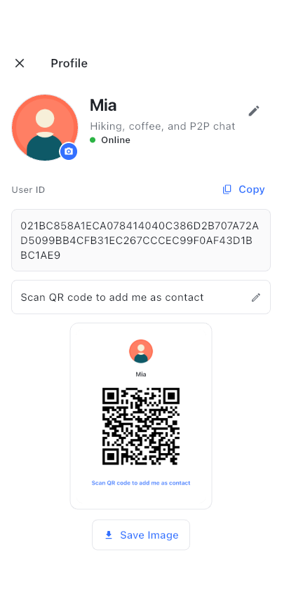
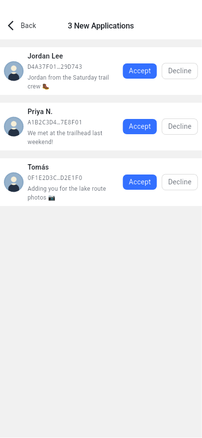
You decide who can reach you.谁能找到你，由你决定。
Instead of a phone number, you have a QR code. Nobody can message you until you accept their friend request, and nobody can look you up in a directory, because there isn't one.你用的是二维码，而不是手机号。在你通过好友申请之前，没人能给你发消息；也没人能在通讯录里搜到你——因为根本不存在这样的通讯录。
- QR identity card: show your Tox ID as a QR code, or copy it with one tap.二维码名片：以二维码展示你的 Tox ID，或一键复制。
- Friend requests you approve: review incoming requests with their message, or turn on auto-accept if you prefer.由你通过的好友申请：查看申请附言后再决定，也可以开启自动通过。
- Your profile: nickname, status message and avatar, shared directly with your friends.个人资料：昵称、签名与头像，直接同步给好友。
- Online presence: see at a glance which friends are online right now.在线状态：一眼看出哪些好友此刻在线。
Your keys stay with you, and move when you want.密钥只在你手里，想迁移时随时带走。
Without a server there's no "forgot password" link, so toxee gives you solid tools to protect, back up and move your identity yourself.没有服务器，也就没有“找回密码”。所以 toxee 给你一整套自己保护、备份和迁移身份的工具。
- Pair a new device by QR: scan a code on your other device over the local network. The transfer is encrypted (X25519 + AEAD), and both screens show a short code you compare before anything is sent.扫码配对新设备：在局域网内用另一台设备扫码即可。传输经 X25519 + AEAD 加密，发送前两边屏幕会显示同一个短码供你核对。
- Password-protected profile: encrypt your profile on disk with a password. There's a strength meter, and the password is held as bytes that are wiped from memory.密码保护的资料：用密码加密磁盘上的资料文件，带强度提示；密码以可清零的字节保存在内存中。
- Two kinds of backup: a qTox-compatible
.toxprofile, or a full.zipbackup with chat history and settings, both importable later.两种备份方式：与 qTox 兼容的.tox资料文件，或包含聊天记录与设置的完整.zip备份，都可随时导入。 - Several accounts: keep multiple identities on one device and switch between them, each with its own isolated storage.多账号：一台设备上保存多个身份并随时切换，数据彼此隔离。
Works on the open Tox network, or entirely on your LAN.既能连公共 Tox 网络，也能只在局域网里用。
toxee joins the public Tox DHT through bootstrap nodes, which introduce peers to one another and can relay encrypted traffic when a direct link isn't possible. You stay in control of which nodes are used.toxee 通过引导节点加入公共 Tox DHT，这些节点负责让双方互相发现，无法直连时也可转发加密流量。使用哪些节点，完全由你掌控。
- Manage bootstrap nodes: use the built-in list or add your own nodes.管理引导节点：使用内置列表，或添加自己的节点。
- LAN mode: run a bootstrap service on a desktop and let other devices find it with a LAN scan. Chat inside an office, lab or ship with no internet at all.局域网模式：在桌面端启动引导服务，其他设备扫描局域网即可发现它。在办公室、实验室甚至完全断网的环境里也能聊天。
- Built for flaky links: messages wait in the offline queue and reconnects happen on their own.适应不稳定网络：消息在离线队列中等待，断线后自动重连。
Bring IRC into your Tox groups.把 IRC 频道接入你的 Tox 群。
The Applications tab hosts optional add-ons. The IRC Channel app bridges an IRC channel into a Tox group, so messages flow both ways.“应用”页提供可选扩展。IRC 频道应用把 IRC 频道桥接到一个 Tox 群，消息双向同步。
- Any IRC server: set the server, port, channel password and a custom nickname.任意 IRC 服务器：可配置服务器、端口、频道密码和自定义昵称。
- Live status: connecting, authenticating, connected, reconnecting, always visible.实时状态：连接中、认证中、已连接、重连中，一目了然。
- Install only what you use: add or remove apps at any time.按需安装：应用随时添加或卸载。
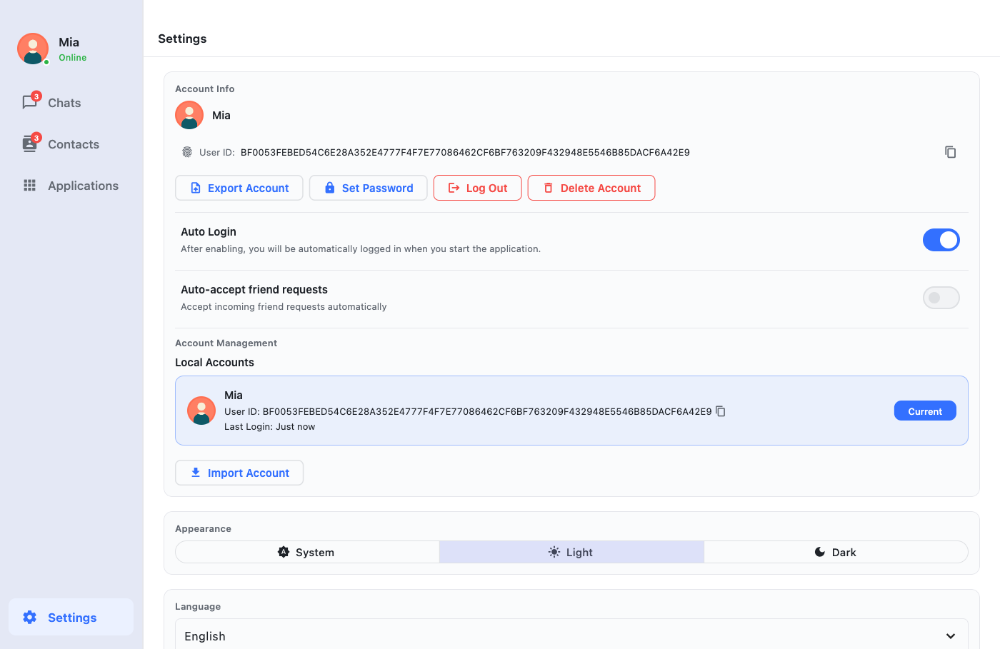
In your language, in your theme.你的语言，你的主题。
toxee speaks six languages, including full right-to-left layout for Arabic. Pick light, dark or follow the system.toxee 支持六种界面语言，阿拉伯语为完整的从右到左布局。主题可选浅色、深色或跟随系统。
- Desktop-native: tray icon with unread count, keyboard shortcuts, roomy master–detail layout.桌面原生体验：托盘图标显示未读数、键盘快捷键、宽敞的主从布局。
- Notifications: sounds and system notifications for messages, friend requests and group invitations.通知：新消息、好友申请与群邀请的提示音和系统通知。
- Auto-login: open straight into your chats, or require a choice at startup.自动登录：启动直接进入聊天，或每次手动选择账号。
qTox-compatible兼容 qTox
Import your existing .tox profile and keep your Tox ID and friends.导入已有的 .tox 资料，Tox ID 与好友全部保留。
Interoperable跨客户端互通
Chat, share files and call with people using any standard Tox client.与使用任意标准 Tox 客户端的人聊天、传文件和通话。
Local-first storage数据只在本地
History, avatars and files live on your device, separated per account.聊天记录、头像与文件都保存在本机，按账号隔离。
Open source开源
GPL-3.0, built on Flutter, Tim2Tox and c-toxcore. Read it, audit it, fork it.GPL-3.0 协议，基于 Flutter、Tim2Tox 与 c-toxcore。可阅读、可审计、可分叉。
One app, from phone to desktop.一个应用，从手机到桌面。
The same Flutter codebase adapts to each form factor: a master–detail layout on desktop and tablet, a focused one-handed layout on phones.同一套 Flutter 代码适配各种尺寸：桌面与平板是主从分栏布局，手机是专注的单手布局。
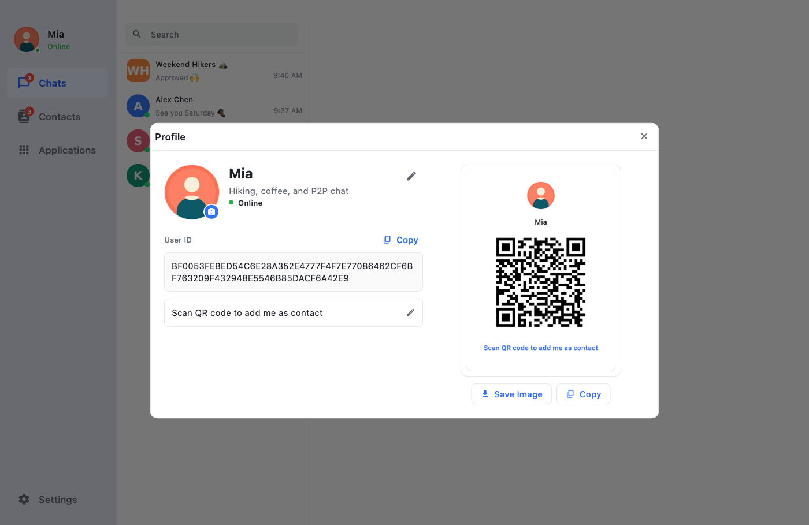
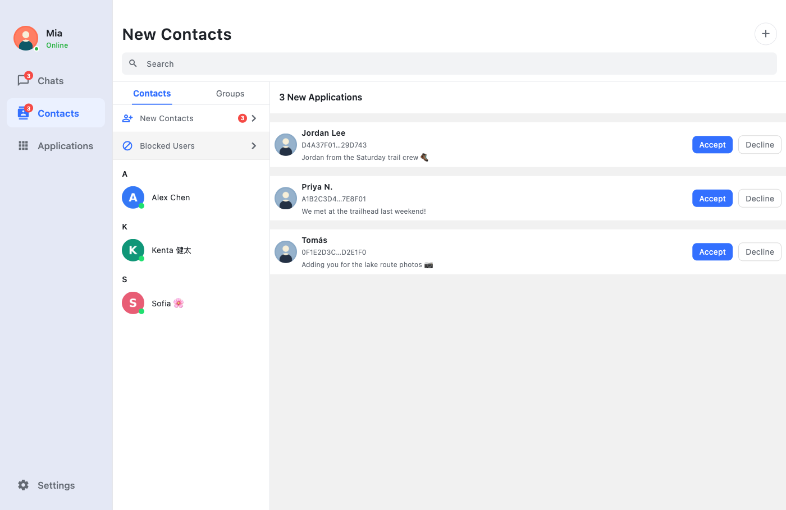
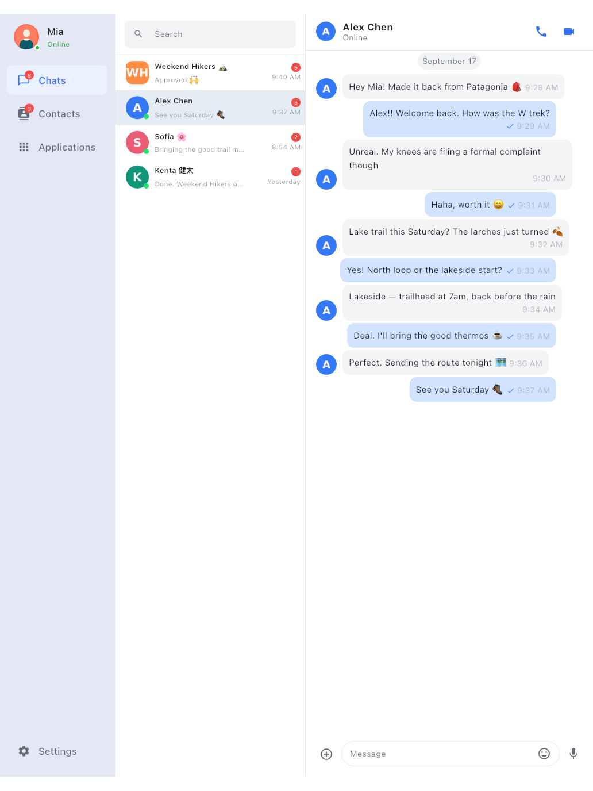
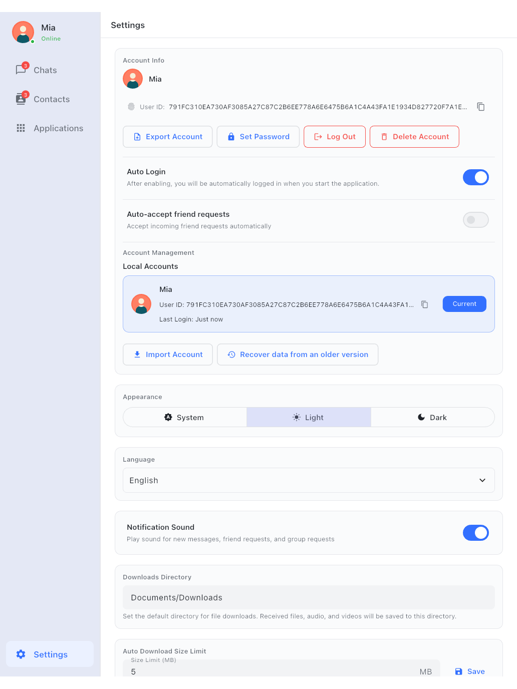
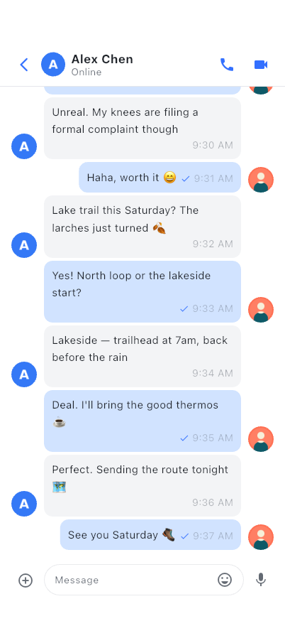
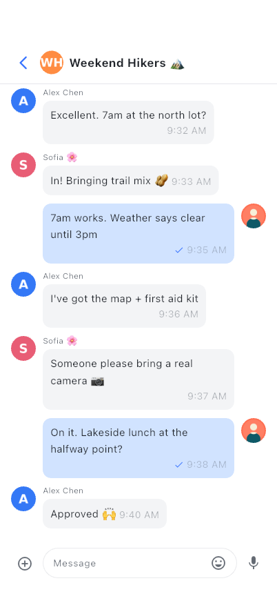
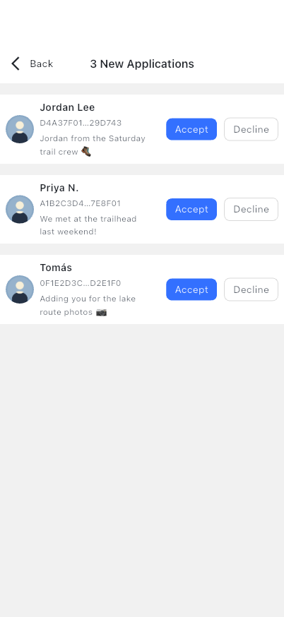
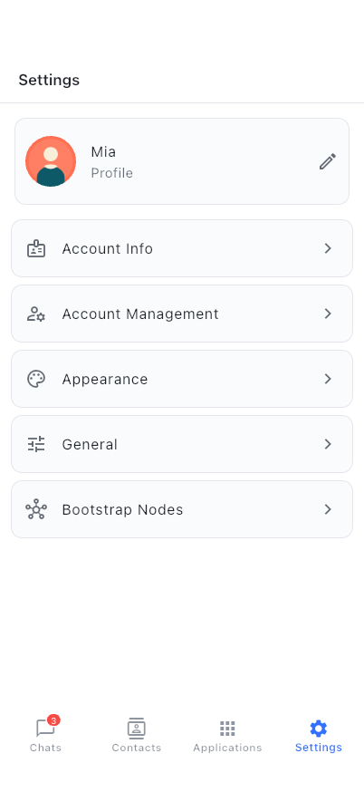
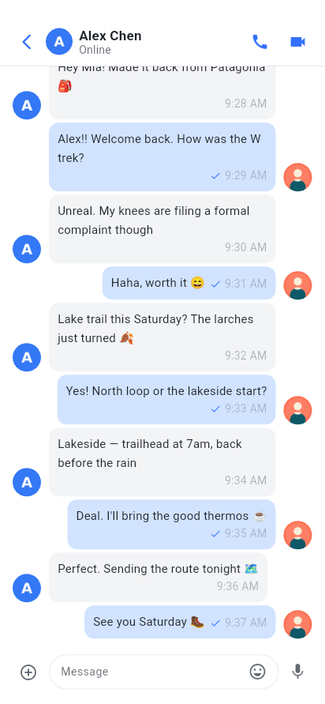
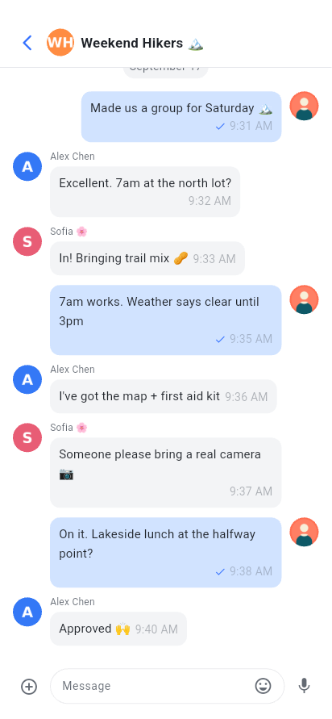
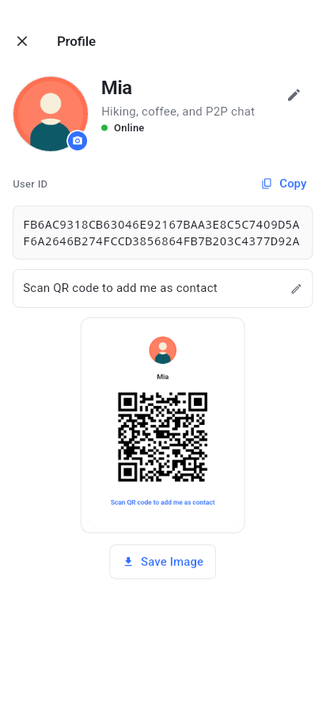
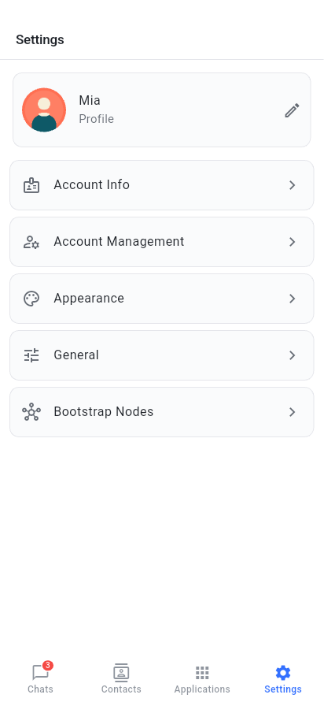
Get toxee for your device.为你的设备下载 toxee。
Free, no account needed. All packages are built by CI from the public source and published on GitHub Releases.免费，无需注册。所有安装包都由 CI 从公开源码构建，发布在 GitHub Releases。
Windows
your system你的系统Windows 10 or later · .msi installerWindows 10 及以上 · .msi 安装包
macOS
your system你的系统macOS 10.15 Catalina or later · .pkg installermacOS 10.15 Catalina 及以上 · .pkg 安装包
Linux
your system你的系统Ubuntu 18.04+, Debian 10+, Fedora 30+ and similarUbuntu 18.04+、Debian 10+、Fedora 30+ 等主流发行版
Android
your system你的系统Android 7.0 or later · 64-bit ARM phones and tabletsAndroid 7.0 及以上 · 64 位 ARM 手机与平板
iOS & iPadOS
your system你的系统iOS / iPadOS 15.5 or lateriOS / iPadOS 15.5 及以上
There's no App Store build yet. You can build and install toxee on your own iPhone or iPad from source with Xcode; see Build from source.暂未上架 App Store。你可以用 Xcode 从源码构建并安装到自己的 iPhone 或 iPad，见从源码构建。
Source code源代码
GPL-3.0 · Flutter · Tim2Tox · c-toxcore
Verify your download (SHA-256)校验下载文件（SHA-256）
Each release ships a SHA256SUMS.txt. Compare it with the hash of the file you downloaded: shasum -a 256 <file> on macOS, sha256sum <file> on Linux, Get-FileHash <file> in PowerShell.每个版本都附带 SHA256SUMS.txt。将它与你下载文件的哈希比对：macOS 用 shasum -a 256 <文件>，Linux 用 sha256sum <文件>，PowerShell 用 Get-FileHash <文件>。
Up and chatting in a few minutes.几分钟就能开始聊天。
- Download the .msi for your PC: x64 for most computers, ARM64 for Snapdragon / Surface Pro X–class devices.下载适合你电脑的 .msi：大多数电脑选 x64，骁龙 / Surface Pro X 一类设备选 ARM64。
- Double-click the installer and follow the wizard. If SmartScreen shows "Windows protected your PC", click More info → Run anyway.双击安装包按向导完成安装。若 SmartScreen 提示“Windows 已保护你的电脑”，点击更多信息 → 仍要运行。
- Launch toxee from the Start menu. Allow network access if the Windows firewall asks; Tox needs it to reach your friends directly.从开始菜单启动 toxee。如果 Windows 防火墙询问，请允许网络访问——Tox 需要它与好友直连。
- Pick the right package: Apple silicon for M-series Macs, Intel for older ones. Not sure? Apple menu → About This Mac → Chip.选择对应的安装包：M 系列 Mac 选 Apple 芯片，较早的选 Intel。不确定的话：苹果菜单 → 关于本机 → 查看芯片一项。
- Open the .pkg and follow the installer. toxee is installed into
/Applications.打开 .pkg 按提示安装，toxee 会安装到/Applications。 - If macOS says the package "can't be opened" or can't be verified, open System Settings → Privacy & Security and click Open Anyway, or Control-click the .pkg and choose Open.如果 macOS 提示安装包“无法打开”或“无法验证开发者”，前往系统设置 → 隐私与安全性点击仍要打开，或按住 Control 点按 .pkg 选择打开。
- Choose .deb for Debian, Ubuntu, Mint and friends, or .rpm for Fedora, RHEL, openSUSE. Pick ARM64 for Raspberry Pi 4/5 and other 64-bit ARM boards.Debian、Ubuntu、Mint 等选 .deb；Fedora、RHEL、openSUSE 等选 .rpm。树莓派 4/5 等 64 位 ARM 设备选 ARM64。
- Install with your package manager so dependencies (GTK 3, libsodium) are pulled in automatically:用包管理器安装，GTK 3、libsodium 等依赖会自动安装：
- Start toxee from your application menu.从应用菜单启动 toxee。
- Download the APK on your phone (or transfer it from your computer).在手机上下载 APK（或从电脑传到手机）。
- Open it. If Android asks, allow your browser or file manager to install unknown apps for this one install.打开它。若系统提示，允许浏览器或文件管理器安装未知应用。
- After install, allow notifications so messages and incoming calls can reach you, and consider exempting toxee from battery optimization so it stays connected.安装后请允许通知，以便接收消息和来电；建议将 toxee 加入电池优化白名单，保持在线连接。
- Create an account. Choose a nickname and, ideally, a password. Your Tox ID is generated on your device; nothing is registered anywhere.创建账号。填写昵称，建议同时设置密码。Tox ID 在你的设备上本地生成，不会注册到任何地方。
- Or bring an existing one. Import a
.toxprofile from qTox or another client, restore a toxee.zipbackup, or pair from a device that already has your account.或沿用已有账号。导入 qTox 等客户端的.tox资料、恢复 toxee 的.zip备份，或从已登录的设备扫码配对。 - Share your ID. Open your profile and show the QR code, or copy the 76-character Tox ID and send it to a friend.分享你的 ID。打开个人资料展示二维码，或复制 76 位 Tox ID 发给朋友。
- Add friends. Paste or scan their Tox ID with a short message. They'll appear online as soon as they accept.添加好友。粘贴或扫描对方的 Tox ID 并附上留言，对方通过后即会显示在线。
- Back up. Export your account in Settings and keep it somewhere safe. Without a server, a backup is the only way to recover your identity.做好备份。在设置中导出账号并妥善保存。没有服务器，备份是找回身份的唯一途径。
Yours to build, audit and own.可构建、可审计、真正属于你。
toxee is a Flutter app. Its UI is built on Tencent Cloud Chat UIKit, and Tim2Tox bridges that UIKit to c-toxcore, so the polished interface talks to the Tox network instead of a cloud service.toxee 是一个 Flutter 应用，界面基于腾讯云 Chat UIKit 构建；Tim2Tox 把 UIKit 接到 c-toxcore 上，于是这套精致的界面连接的是 Tox 网络，而不是云服务。
# clone the app# 克隆应用仓库 git clone https://github.com/agentx-icu/toxee && cd toxee # submodules, SDK fetch & patches, pubspec_overrides# 子模块、SDK 拉取与补丁、pubspec_overrides dart run tool/bootstrap_deps.dart flutter pub get # build and run (macOS shown; --platform linux | windows | android | ios)# 构建并运行（以 macOS 为例；--platform linux | windows | android | ios） ./build_all.sh --platform macos --mode release
Full instructions per platform are in the documentation.各平台的完整说明见项目文档。
Questions, answered.你可能想问。
Is it really serverless? What are bootstrap nodes?真的没有服务器吗？引导节点是什么？
There's no toxee server and no account database. Bootstrap nodes are public, community-run entry points to the Tox DHT. They help your device find your friends and can't read your messages.toxee 没有服务器，也没有账号数据库。引导节点是社区运营的 Tox DHT 公共入口，负责帮你的设备找到好友，无法读取你的消息。
If a direct UDP connection isn't possible (strict NAT or firewall), traffic may pass through a Tox TCP relay. It stays end-to-end encrypted, so the relay can't read it.如果无法建立 UDP 直连（严格的 NAT 或防火墙），流量可能经过 Tox TCP 中继，但依然端到端加密，中继无法读取。
Does my friend need to be online to receive messages?对方必须在线才能收到消息吗？
Yes. Tox delivers directly between devices, so there's no mailbox in the cloud. toxee keeps messages for offline friends in a local queue and sends them automatically the next time you're both online.是的。Tox 在设备之间直接投递，云端没有“信箱”。toxee 会把发给离线好友的消息存进本地队列，等双方下次同时在线时自动送出。
Can I talk to people using qTox or other Tox apps?能和使用 qTox 或其他 Tox 应用的人聊天吗？
Yes. toxee speaks the standard Tox protocol, so chats, file transfers and calls work with other Tox clients. You can also import your existing qTox .tox profile and keep your Tox ID and friend list.可以。toxee 使用标准 Tox 协议，聊天、文件传输和通话都能与其他 Tox 客户端互通。你还可以导入已有的 qTox .tox 资料，保留 Tox ID 与好友列表。
How do I use the same account on several devices?怎样在多台设备上使用同一个账号？
Use Pair with another device: show a QR code on the device that has your account, scan it on the new one, and confirm both show the same code. If the devices can't reach each other on your network, use Export on one device and Import on the other.使用与其他设备配对：在已登录的设备上展示二维码，用新设备扫描，确认两边显示同一个短码即可。如果两台设备在当前网络中互相不可见，可以在一台上导出账号，在另一台上导入。
I forgot my password. Can you reset it?忘记密码了，可以重置吗？
No, and that's by design: there's no server that knows it. The password encrypts your profile on your own disk. Keep an exported backup somewhere safe; it's the only way back if a device is lost.不能，这是有意为之：没有任何服务器知道你的密码。它只用来加密你本机磁盘上的资料文件。请把导出的备份妥善保存，设备丢失时，这是唯一的找回途径。
Is there an iPhone app?有 iPhone 版吗？
toxee runs on iPhone and iPad (iOS 15.5+), but it isn't on the App Store yet. Today you can build it from source with Xcode and install it on your own device.toxee 可以在 iPhone 和 iPad（iOS 15.5+）上运行，但还没有上架 App Store。目前可以用 Xcode 从源码构建并安装到自己的设备上。
Is toxee stable?toxee 稳定吗？
toxee is experimental and under active development, with frequent releases. Expect rough edges, keep backups, and please report anything odd on GitHub.toxee 仍处于实验阶段、积极开发中，发版频繁。难免有不完善之处，请做好备份，遇到问题欢迎到 GitHub 反馈。
Who makes toxee, and what does it cost?toxee 由谁开发？收费吗？
toxee is developed in the open by agentx-icu and released under GPL-3.0. It's free, and has no ads, analytics or in-app purchases.toxee 由 agentx-icu 公开开发，以 GPL-3.0 发布。完全免费，没有广告、统计追踪或内购。